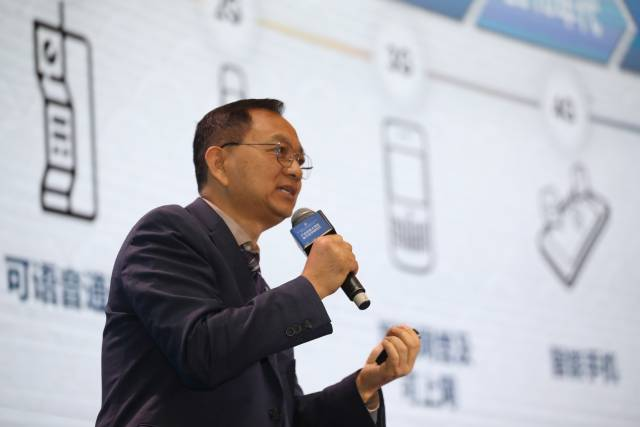

发布日期：2019-12
2019年12月7日，第三届高端人才珠海创新创业交流大会暨中国海外学子报国行活动举行，加拿大工程院院士、国家特聘专家、公司董事长漆一宏分享了《5g产业发展及机遇》的主题演讲。
查看全文2019年12月7日，第三届高端人才珠海创新创业交流大会暨中国海外学子报国行活动举行，加拿大工程院院士、国家特聘专家、公司董事长漆一宏分享了《5g产业发展及机遇》的主题演讲。
漆一宏介绍，新频段、新天线、新设计三大无线技术创新铸就5G高性能，而5G技术四个目标：智能、泛在、绿色、普适，及六种形式：互联网、物联网、云计算、大数据、人工智能、边缘计算，则是5G市场的重要驱动力，驱动生产向自动化发展。如果说5G是“高速路”，那么商用初期运营商与设备商则是扮演“基础建设”角色，这为5G中后期发展奠定良好基础。
“然而，并不是所有区域、企业都能有资格在商用初期中进入市场。珠海企业应如何在5G技术的商用中后期，抢占市场份额？”漆一宏认为，珠海企业可探索发挥行业终端与元部件创新主体作用，抓住5G市场机遇，加强5G研发投入，开展标准制定、技术攻关、端到端试验等，领先开发完成5G终端与元部件产品。
以封装天线为例。漆一宏指出，封装天线（AiP）是基于封装材料与工艺，将天线与芯片集成在封装内实现系统级无线功能的一门技术；AiP技术为系统级无线芯片提供了良好的天线与封装解决方案。最新权威市场分析报告指出，AiP技术会是毫米波5G通信与汽车雷达芯片必选的一项技术，AiP测试费用占到了其研发的80%，然而目前该产品的生产市场仍有大量空间，珠海可把握机遇。
“总而言之，5G产业的发展，是世界的机会，也是中国的机会，更是广东、珠海的机会。”漆一宏建议，珠海可在5G商用中后期，尝试通用行业终端产品，在垂直领域实现亮点突破，围绕云计算、车联网、物联网、VR/AR相关应用，进一步拓展医疗、交通、工业制造、能源等领域推出5G定制终端。
【记者】何丽苑
【摄影】关铭荣
文章来源为南方+